Pass the medical examiner exam by remembering scenes, not tables.
Fourteen illustrated memory-palace cards — each narrated, with a spotlight that walks you object by object through the numbers FMCSA tests — plus a 130-question practice bank and a cheat sheet, every fact cited to 49 CFR 391 and the 2024 Medical Examiner's Handbook.
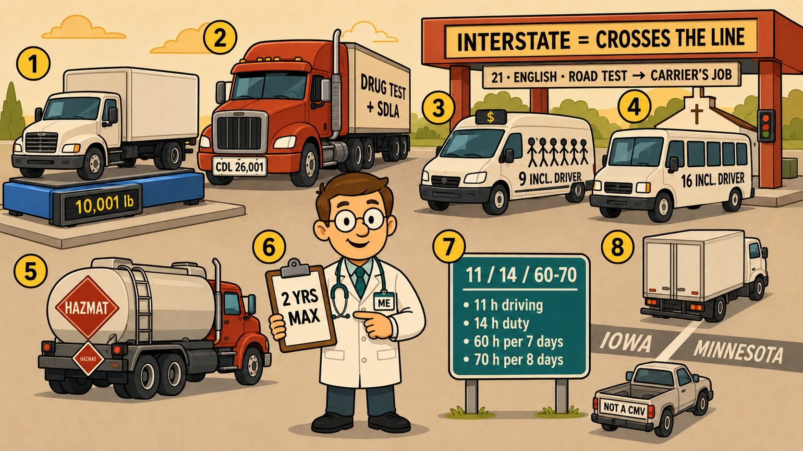
The Sketchy method, applied to the DOT physical
If you studied for boards with visual memory palaces, you already know the move: put every number on an object in a scene, then let the story carry it into the exam room.
Watch the scene
Each card is one richly illustrated location — a weigh station, a lighthouse optometrist, a five-story pharmacy. Every exam number is painted on an object.
Follow the spotlight
Press play. A narrator walks the scene while a spotlight moves to each numbered object, explaining the rule and the memory hook. Click any paragraph to jump.
Test yourself, then check the source
Eight to ten questions under every card. Each answer shows its source type, links the regulation or Handbook section, and opens the matching cheat-sheet entry.
Fourteen cards, one exam
Card 0 sets the scene and meets Doc, the medical examiner. Cards 1–13 cover the thirteen physical qualification standards, the forms, and the examiner's own obligations.
Who needs a DOT physical — CMV and CDL thresholds, passengers, hazmat, interstate, the two-year ceiling, hours of service.
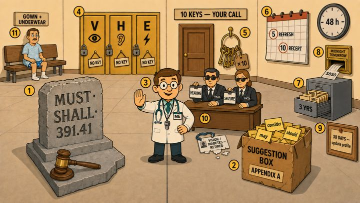
Regulation versus guidance, the three objective standards, who decides — and the examiner's own deadlines.
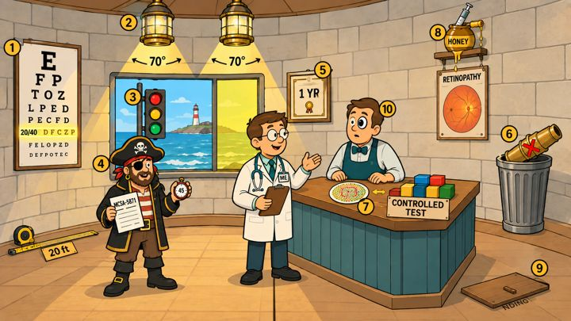
Vision — 20/40 in each eye, 70° fields, signal colors, the Alternative Vision Standard and MCSA-5871.
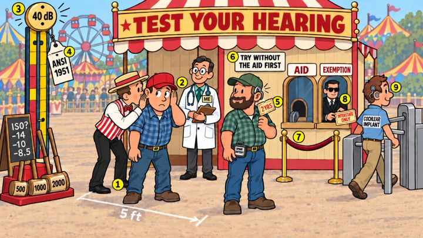
Hearing — the forced whisper, audiometry at 500/1,000/2,000 Hz, hearing aids, and the federal hearing exemption.
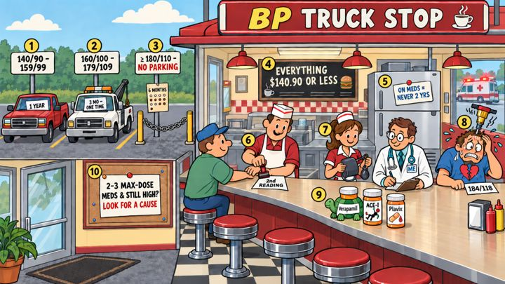
Hypertension — staging and certification intervals, the second reading, the hypertensive emergency, and medication side effects.
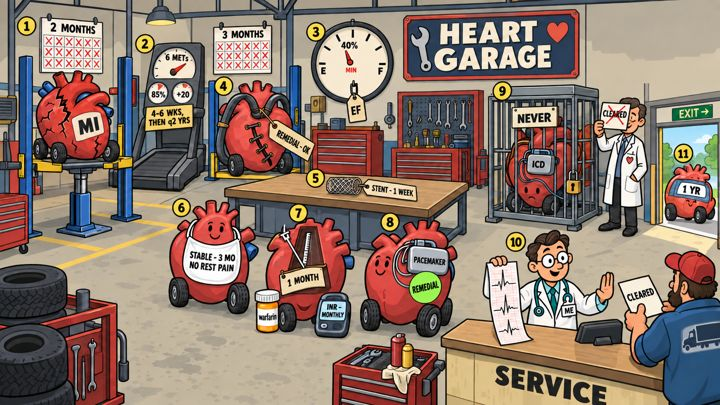
Coronary disease — MI, the exercise test, ejection fraction, bypass, stents, angina, arrhythmias, pacemakers and ICDs.
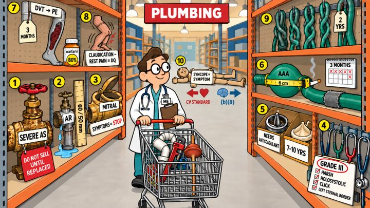
Valves and vessels — aortic and mitral disease, murmurs, prosthetic valves, aneurysm, pulmonary embolism, PVD, venous disease, syncope.
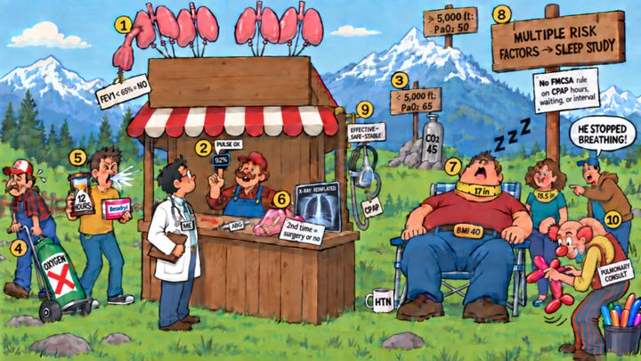
Respiratory — spirometry and blood-gas benchmarks, oxygen, sedating antihistamines, pneumothorax, and obstructive sleep apnea.
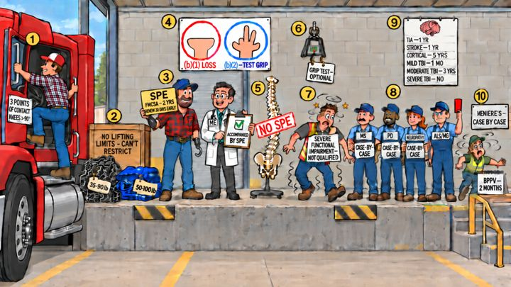
Limbs and neuromuscular — job demands, SPE certificates, grip and prehension, neurologic waiting periods, vertigo.
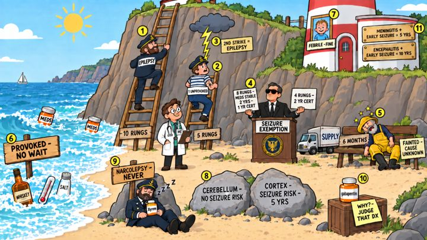
Seizures and loss of consciousness — epilepsy, single seizures, the seizure exemption, provoked seizures, narcolepsy.
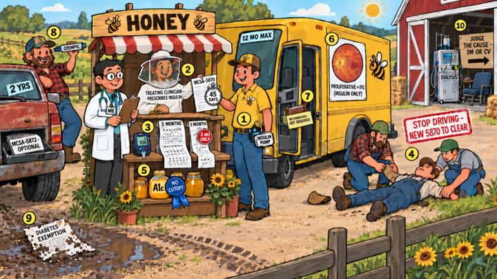
Diabetes — the insulin-treated standard, MCSA-5870, glucose records, severe hypoglycemia, non-insulin diabetes, dialysis.
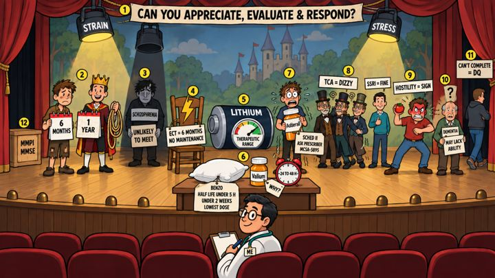
Psychological — appreciate, evaluate, respond; mood and psychotic disorders, ECT, lithium, sedatives, stimulants, antidepressants.
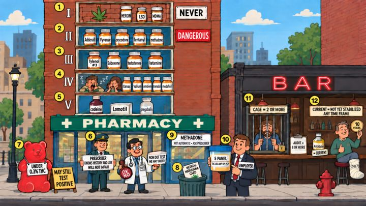
Drugs and alcohol — DEA schedules, the prescription exception, marijuana and CBD, methadone, DOT testing, CAGE and AUDIT.
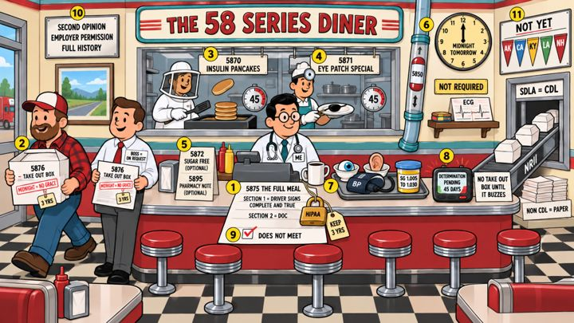
Forms and recordkeeping — MCSA-5875, 5876, 5870, 5871, 5872, 5895 and 5850, the four required tests, pending, and NRII.
Three tools that point at each other
Scene cards
Narrated by a consistent studio voice, with a moving spotlight, focus mode, keyboard control, and the full script alongside the picture.
Open the deckPractice questions
Original, scenario-style items written from the regulations and the Handbook. Every explanation cites its source and links to the cheat sheet.
PracticeCheat-sheet sections
Numbers at a glance, every standard, forms and deadlines, a 2024-Handbook cross-check, and an acronym glossary — readable online or as a PDF.
Read the cheat sheetEvery number carries a source tag
The exam is written to the regulations, but much of what training courses teach comes from older FMCSA tables. We keep both straight so you are never surprised by a question — or by a real driver.
The clinicians FMCSA lists as eligible examiners
Certification requires accredited training and the National Registry test (49 CFR 390.103–390.111). This site is a study aid that complements that training; it does not replace it.
Built by a physician who needed it himself
Timothy Abels, MD
Family physician · Founder, Trident Alliance Holdings
Before medical school, Dr. Abels spent more than fifteen years as a registered nurse, most of it in wound care. He studied for his boards the way a generation of clinicians did — with visual memory palaces — and when he sat down to prepare for his own NRCME certification he found the same wall of numbers every examiner faces: waiting periods, intervals, form numbers, thresholds, and a 2024 Handbook that quietly changed which of them still apply.
So he built the deck he wished existed: one scene per standard, every number painted on an object a narrator can point to, and every fact traced back to the regulation or the Handbook. NRCME Memory Palace is the result, published by Trident Alliance Holdings.
Common questions
Is this the FMCSA-accredited training I need to get certified?
No. To be listed on the National Registry you must complete training from an FMCSA-accredited program and pass the certification test at an approved testing organization. This site is an independent study aid built to make the material stick before test day.
Why do some cards teach numbers the 2024 Handbook no longer lists?
The 2024 Handbook replaced many fixed waiting periods (for example after a heart attack) with individual assessment. Those traditional numbers are still the benchmarks that questions — and cardiologists' letters — refer to, so the cards teach them as "traditional FMCSA benchmarks" and the cheat sheet cross-checks every one against the 2024 Handbook.
Where do the practice questions come from?
They are original items written from the regulations, the 2024 Handbook, and FMCSA program pages. Each answer lists its references with links so you can verify the rule yourself. No test items from FMCSA or any training vendor are reproduced.
Does it work on a phone?
Yes. The player, the questions, and the cheat sheet are all built for phones and tablets; use Focus mode to give the scene the whole screen.
What does it cost?
During the preview period the full deck is open. Member accounts and pricing are coming; the Sign in link will go live when they do.